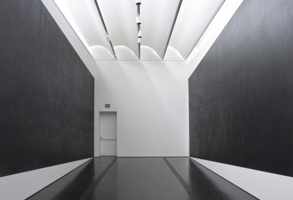

-
On Site: Serra at the Met and the Menil
by Brian Dupont June 19, 2012
courtesy of SFMoMA
Setting, layout, and installation are key to a successful exhibition, yet often they are only apparent for their unwelcome intrusion. A good installation disappears, but when it goes wrong, we notice. A successful installation not only shows art in the best circumstance, but will use the physical placement to elucidate a thesis or direct the viewer towards new ideas and connections1. I would guess that it is rare for the typical museum visitor to see different installations of the same exhibit, but such a comparison has the potential to expose vastly different relationships between art and architecture, or the chronology of production in relation to individual pieces. A recent visit to Houston provided me the opportunity to view the Menil Collection’s installation of Richard Serra Drawing: A Retrospective. I saw this show at its first venue, the Metropolitan Museum of Art in New York, and there are few artists working today whose practice uses material to directly manipulate and activate space as does Serra. Such use of space as raw material amplifies the differences between the installations of the exhibition.
I may be biased towards the installation at the Met for seeing it first, but the layout followed a much more orderly chronological progression through Serra’s career, which feels more natural for a retrospective. Starting at the beginning revealed his early works on paper as coming out of a more standard drawing practice and established his use of paintstick to fill area in a way that creates mass. The Met installation wisely kept the early framed predecessors in an almost lobby like space at the entrance, and then slowly opened up the exhibition as Serra shifted away from a conventional drawing practice of marks on paper.
As an introduction, the masterful Untitled (1974) introduces the artist’s concerns with sculptural process into drawing. The perfect geometry of the rectangle is inscribed in paintstick on a sheet of paper stapled high on the wall, but the bottom edge is determined by another, blank sheet stapled over the first only at the margins of the outside edge. The second sheet creates a subtle curve reminiscent of drapery as the paper buckles with gravity and the supposed “thing” of the drawing, the heavy black rectangle, suffers a distortion of real world material. While it’s easy to wonder just how far down the first sheet of paper goes or a rectangle is filled in#, the actual mystery is created by a very simple economical application of material presages the artist’s more forceful spatial shoves to come, and it is with this work that the Met opened up the show into the works with transferring paintstick to the wall2.
The Menil is at a disadvantage for essentially having two points of entry. Serra himself positioned a tiny Giacometti3 figure in the lobby, and then set the Forged Drawing, four shaped blocks of metal with his signature paintstick covering the face on the opposite side and visible from a parking entrance. These are not a bad choice as introductory works as they are an imprecise fit with the works on linen and loudly declare Serra’s interest in mass4. Yet, they have always felt clunky and cartoony to me as supposed drawings, as if he was trying too hard to move the medium away from a dependence on a paper thin support.The group might work better on the floor, but then the visceral reaction they impart for hanging high on the wall5 wouldn’t necessarily translate6. Similarly, the juxtaposition with the minuscule Giacometti feels odd as an introduction by another artist, going a bit too far in the other direction of Serra’s practice7.
Both museums seem to find the inclusion of the films and sketchbooks problematic, and respond by segregating them from the finished drawings. The Met clustered these at the end just before the gift shop while the Menil set the vitrines off across from the main entrance to the galleries. The journals are sequential and only of utility when they can be leafed through and thoughts and connections can be made across pages, which is impractical to allow viewers to do. Serra does not draw prior to the completion of a sculpture8, so the traditional notational aspects of sculptor’s drawings are traded for blocky renderings of something already made. Perhaps given Serra’s usual scale and thoughts on removing personal gesture from the work9 it is not surprising that these works feel crammed into the pages of the sketchbooks and the draftsmanship is uninteresting. In Serra’s case, complaints about draftsmanship are utterly beside the point in his finished works. There is something to be said for using a retrospective to lay all aspects of his drawing practice bare in the interest of scholarship rather than aesthetics, but Serra’s drawings have a level of finish and intent that does not relate to the material in the journals beyond mere curiosity of what his sketchbooks look like. Likewise, the films feel shoehorned into the exhibit, and while they do serve elucidate his early procedural concerns they do not feel vital to the show. They would seem to fit best with an exhibition devoted to his earliest works, such as a small concurrent show SFMoMA ran with this show at the end of 2011. At the Met and the Menil they are tangential, more illustrative of a road not taken than as vital documents to the artist’s process. The only contemporaneous work on paper — oft reproduced Verb List — is less interesting as a drawing than as a conceptual document.
The true stars of the show are the large Installation Drawings of paintstick on linen. They are impressive in both spaces, but also foreground the influence of the architecture and exhibition design. The Met opened up into a larger main space with the transition to these works, while the Menil maintained a uniform experience. Serra has spoken how he wants his paintstick surfaces to have the anonymity of asphalt,10 but each venue presented the surface and created space to different effect. The Met’s artificial lighting spot lit the crags and granular materiality of the surfaces, while the even, diffused natural light of the Menil homogenized the surfaces into lurking masses that seem more in keeping with Serra’s intention to affect the viewer by manipulating space. Where Serra talks about the primacy of black in his drawing,11 the sensation he describes was the most acute and accurate at the Menil. The floors compounded the effect, the dark stained wood almost the color of Serra’s paintstick. This broke down the distinction between individual works to a degree, making the each piece less distinct and creating a feeling of a solid trench of material for the viewer to navigate. At the Menil the work seemed to be almost on top of you — the Met allowed them a bit more space, so the viewer could stand outside, and approach and interact with each work individually.
Serra’s use of paintstick and insistence on drawing as black12 poses an interesting dichotomy with the metal plates of his sculpture, especially in relation to the reproduction of his work. Every catalog13 I’ve ever seen of Serra’s work is printed in black and white, removing surface inflection and flattening the material to emphasize shape and mass at their most basic level. This reduction is particularly striking in regards to his massive steel sculptures, as the surfaces are in fact incredibly painterly, with texture and color on a thin skin that is delightful in spite of what I am sure is Serra’s desire to the contrary. (As the sculptures approach the scale of architecture they similarly attract graffiti.) The irony of the paintstick drawings is that the works with literal paint are less “painterly” than those mad of lead and steel plates. He can investigate visual mass and density without the distraction of color that an elegant patina of rusted steel imparts; this is played up in his black and white reproductions where the drawing is reduced to only shape and ultimately highlights the artificiality of reproduction. It is as if Serra is so intent on demanding that the viewer physically experience the work that he must degrade any mere representation to highlight just how poor a substitute it is.
It is facile to assume that the easy portability of the drawings contradicts Serra’s commitment to the physical truth of mass in space.14 While their material reality is of a simulation of mass that relies on architecture for its structure15 that interpretation ignores the truth of what the process of drawing is for Serra. Even while making work that completely challenges every idea of what the medium is, he simultaneously engages with what the medium as a basic underpinning for his entire practice.
As the exhibition continues we find that instead of retreating to a formula, Serra slowly turned, examined, and explored his primal vocabulary through the Diptych, Dead Weights, and Weights and Measure series. As he recoiled from public sculpture in the United States with the destruction of Tiled Arc he reconsidered paper as a support, perhaps seeking to make art that was not so much at the mercy of any particular governance. He modified his marking process to force the paintstick through a wire screen, making his drawings a matter of pure gesture; just as it would take two hands to scrub one of his paintstick bricks across a swath of linen, the force required to push the paintstick through the mesh obviate any sense of personal idiosyncrasy or écriture. These works represent the most basic gesture any of us can make with material.
The Met show culminates with the super gravity of the Rounds and the Calagari-like cake frosting of the Solids series. The most recent works expand on gesture to impart an impressive accumulation of material that is more noticeable for being a framed sheet of paper. With more impasto than almost any painter would think to use16, these works are nonetheless the result of sculptural concern with process; what is archived on these sheets is not anything that speaks to outside illusion or allusion, and that is a mark of how successful the exhibition is at letting the work shift our own expectations about drawing. It is not unfitting that an artist who’s practice sought to radically deconstruct all the standard conventions of the medium came back around to them by drawing circles.
installation of 'Two Corner Cut' at the Menil.
But Serra is a living artist who continues to work and the Menil finishes instead with a work made specifically for the terminal of the show. Two Corner Cut: High Low expands the scale of the installation drawings across the sides of a forty foot long dead end canyon. Sloping down from the entrance or propped up by wedge-like cuts, depending on the viewer’s ever shifting point of view, this work nevertheless introduces something new into the context of Serra’s art: the potential for flight. Aided by the Menil’s architecture17 the slight unsettling of perspective also directs the viewer’s attention upwards. Serra’s masses are insistently earthbound; even in the torqued sculptures the rim of the metal plates suggest vertical containment. Crossing the threshold into the space of Two Corner Cut there is no such limit, and there is exhilaration in this new feeling for this work. The final wall sends the viewer back the way they came, but there is no feeling that Serra will do the same.
- Of course the curatorial thesis is central to the exhibition’s goals, but how the work is installed is much more limited in a retrospective of a single artist as it is only playing off of other works by the same artist. By contrast a group survey exhibition provides much more opportunity to draw disparate and new connections between works by different artists. [↩]
- It is like wondering if Johns completely painted the flags underneath the successively layered stretchers in 3 Flags. How far down the paper and drawing goes only to be covered up may speak to Serra’s thought process (on which see my previous essay on Serra’s drawings), and how he views the marks on paper as material, but there is no easy answer. Does practicality and labor saved speak for or against his practice? What would we gain by knowing he covered up a great deal of work with a thick sheet of paper? John’s slyly painted the covered portions of his work in black and white, but Serra is neither served nor likely to engage in such humor. [↩]
- See Tyler Greene’s interview with Serra on MANpodcast.com. While it is impossible to know how much Serra was responsible for each installation at each venue, it does stand to reason that an artist of his stature and temperament probably had quite a bit of input. For the purposes of discussion please assume that distinction between the decisions of Serra and curators Michelle White, Gary Garrels, and Bernice Rose are indistinguishable. [↩]
- And in really having a lot of it, goddamn it. [↩]
- That of a threat imparted via mass. [↩]
- We move through space as vertical creatures after all. [↩]
- And it is even more out of place if you see it on your way out the door, as I did. Such a small, distilled vision as Giacometti’s serves to undercut Serra’s grandeur the same way a tiny aside by one of Shakespeare’s fools undercuts a king’s pomposity. One can also compare Serra to the adjacent Twombly collection, who Serra proclaimed as the bravest artist for taking on Jackson Pollock with only a pencil. [↩]
- In Draw it Black: A Q&A with Richard Serra on His Daring New Retrospective at the Met. [↩]
- Catalog essays Drawing as Drawing by Michelle White (pp 24) and Drawing Thick: Serra’s Black by Richard Schiff, pp 32 – 34 [↩]
- Schiff. [↩]
- In pretty much every essay in the exhibition catalog. [↩]
- Ibid. [↩]
- See note 4; I think it is safe to assume that Serra has similar control over representations of his work in these instances, and that we can assign overall authorship to him. [↩]
- Compared to the sculptures which require crews of riggers and machinery, the drawings are simply rolled and crated, and can be installed with little more than a knife and staple gun. [↩]
- Without the wall they are stapled to they loose their structure, and their very existence as works of art. Rolled on a tube in a crate they are only raw material. [↩]
- It cannot go unremarked that there has always been an air of competition about his use of material. [↩]
- The proximity to the edge of the roof louvers and natural light is stronger than in other areas of the exhibition’s labyrinth, increase the feeling of rising above the plane of the floor. It is a shame that the architectural reality of fire codes demand the intrusion of a door and glowing red exit sign mar the blankness at the end of the space, though. [↩]